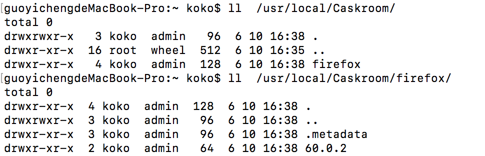
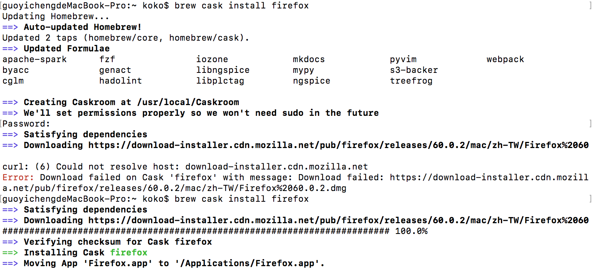
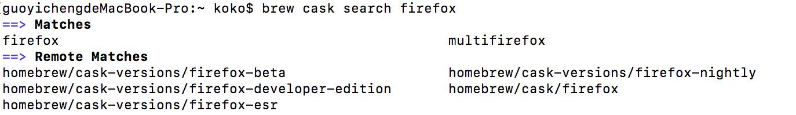
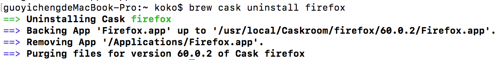
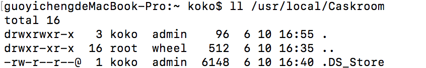

Homebrew (3) - 透過 Homebrew Cask 安裝應用程式或圖形化工具
Posted on Tue 20 April 2021 in Homebrew
Homebrew Cask 介紹
第一次看到 Homebrew Cask 時或許會覺得已經有 Homebrew 與他的 Tap 擴展指令了，那麼還需要 Homebrew Cask 的差別是什麼？
這裏回頭先介紹一下 Homebrew，Homebrew 存在的主要任務是為了可以在 Mac 上方便管理套件指令的工具，所謂的套件指令是那些需要下載 Source Code 並解壓縮，執行 ./configure && make install 後，並且同時包含相依的套件，設定好環境、編譯好的意思，而 Homebrew 使這些全部自動化，也方便移除。
因此對於開發者而言是一大福音。
而 Homebrew Cask 比較面向一般用戶，繼承了 Homebrew 方便與簡單管理的理念，而延伸強化工具。
Homebrew Cask 主要是方便下載已經編譯好的 Mac OSX 應用程式、一些圖形化軟體 （.dmg/.pkg），並且存放 Homebrew Cask 管理的目錄中，因此省去平常的下載、解壓縮、拖移與安裝等步驟。例如安裝 Chrome 或是 Atom 等軟體，並且 Homebrew Cask 中還可以安裝許多不在 App Store 的軟體工具，如下圖（來自官方 Github)：

特別是對於 Mac 而言，常常有許多應用程式軟體下載後，在移除時無法完全移除乾淨，而對於使用 Homebrew Cask 而言這將不在麻煩了。
安裝 Homebrew Cask
新版的 Homebrew 中， Homebrew Cask 已經整合在其中，不需要再而外透過 tap 下載 Homebrew Cask 才會出現 cask 指令，只要直接輸入安裝應用程式指令，如下載 Atom，便會直接 Tap 下載 Homebrew Cask：
$> brew cask install atom
或是 輸入 brew cask 即可便會自動 tap 下載：
$> brew cask

Cask 下載的應用程式管理位置
在早期的 Homebrew Cask 版本中，透過 Cask 指令下載的應用程式，會放置在 /opt/homebrew-cask/Caskroom 中，並且建立一個 Link 放置 ~/Applications ，但是此種方式可能會導致 Spotlight 無法查詢到。
不過新版的 Homebrew Cask 中，下載後的應用程式已經直接放置到 ~/Applications 中，如同一般方式下載好拖移放置的方式一樣，並且會在 /usr/local/Caskroom 建立應用程式的相關 metadata 或設定等資料保存的目錄。
例如安裝 firefox 瀏覽器，如下安裝完後會出現在 ~/Applications ：
同時 /usr/local/Caskroom 會有保存 firefox 的設定或資料的目錄產生：

Homebrew Cask 常用指令
(1.) 透過 Cask 安裝應用程式
如下以 firefox 為例，會看到 Homebrew Cask 的步驟中會依序建立 firefox 瀏覽器的一些應用程式資料在 /usr/local/Caskroom 中，並且把應用程式直接存在 ~/Applications 下。
$> brew cask install [應用程式]

(2.)搜尋欲安裝的軟體
透過 search 指令，與 Homebrew 的 search 指令一樣可以使用正規表達式去搜尋，以下以 firefox 為例：
$> brew cask search [搜尋的應用程式，可用正規表達式]

(3.)顯示 Homebrew Cask 中指定要查詢的可安裝軟體資訊
此指令可以查看 Cask 中可以安裝的軟體資訊：
$> brew cask info [應用程式]
例如查看 Chrome 瀏覽器的安裝資訊：

(4.) 移除應用程式
透過 Homebrew Cask 的移除指令可以乾淨移除軟體，包含存放在 /usr/local/Caskroom 中的該軟體相關保存資訊
$> brew cask uninstall [已安裝應用程式]
如下已移除 firefox 為例子：

移除後 /usr/local/Caskroom 中的 firefox 目錄也移除。
